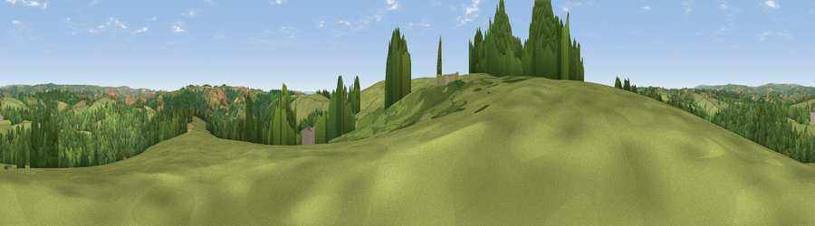

Viewpoint near Oakford Bridge
#26248 in England · top 55% of its area beats it · near Oakford Bridge · path 158 mWhere it is
The exact computed spot (SS 92725 20225). Click the marker for map links.
Public access: the nearest public right of way is about 158 m away — the final stretch may cross private land. Computed from Natural England's CRoW access layer and OpenStreetMap rights of way — not the legal definitive map. Always verify locally.
The view, rendered

A 360° render of this exact spot computed from the terrain model, tree cover and land cover — summer colours, afternoon light, calibrated against photographs of famous viewpoints. Real trees, hedges and buildings will differ in detail.
The panorama
Grey silhouette: terrain skyline in each direction (720 bearings, Earth curvature and refraction included). Dashed green: skyline with trees (+15 m) and buildings (+8 m) as obstacles. Blue strip: how far the ground is visible on each bearing.
Where the view opens
Wedge length = distance to the farthest visible ground on that bearing (vegetation-aware). Rings at 10, 25 and 50 km.
What fills the view
50% grassland · 47% woodland · 3% cropland
Angular shares of the visible panorama (visual magnitude), not map area. Landscape diversity 0.36 (0–1 Shannon).
Key numbers
More beautiful places nearby
The staircase of upgrades: each row has a higher view potential than everything closer. Driving times are estimates from straight-line distance, calibrated against real road routing — check an actual route before setting out.
| Place | Direction | Drive | Score |
|---|---|---|---|
| Viewpoint near Oakford Bridge | S · 1 km | ~2 min | 56.1 |
| Ash Hill | SW · 1 km | ~4 min | 56.5 |
| Viewpoint near Loxbeare | SSW · 4 km | ~9 min | 64.0 |
| Stoodleigh Beacon | WSW · 5 km | ~10 min | 66.7 |
| Viewpoint near Skilgate | NNE · 9 km | ~18 min | 72.5 |
| Viewpoint near Wiveliscombe | ENE · 15 km | ~27 min | 75.1 |
| Fursdon Hill | S · 15 km | ~27 min | 76.2 |
| Viewpoint near Bradninch | SSE · 17 km | ~29 min | 77.7 |
50.97142, -3.52922 · source: screening · position refined by local search. Computed location — check access rights before visiting.